Tulpar T7 V21.8 17,3 Oyun Bilgisayarı
- İşletim Sistemi FreeDos (İşletim sistemi bulunmamaktadır)
- İşlemci
- İşlemci Intel® Tiger Lake Core™ i7-11800H 8C/16T; 24MB L3; 8GT/s; 2.3GHz > 4.6GHz; 45W; 10nm SuperFin
- İşlemci Mimarisi 11. Nesil Tiger Lake
- Chipset Mobile Intel® HM570 Chipset
- Ekran Kartı nVIDIA® GeForce® RTX3070 Max-Performance 8GB GDDR6 256-Bit DX12 (En Yüksek Grafik Gücü; 125Watt + 15 Watt DB 2.0)
- Ekran 17,3" QHD 2560x1440 165Hz %100 sRGB IPS Mat LED Ekran
- Bellek 16GB (2x8GB) DDR4 1.2V 3200MHz SODIMM
- Depolama
- 1.Port M2 SSD 500GB CRUCIAL P5 PCIe M.2 2280 PCIe 3.0 x4 (Okuma: 3400 MB/s - Yazma: 3000 MB/s)
- 2.Port M2 SSD PCIe Gen3x4 Takılı Değil - Max. Okuma Hızı:3500 MB/s - Max. Yazma Hızı:3000MB/s desteklemektedir.
- Donanım Özellikleri
- Klavye RGB 4 Bölge Aydınlatmalı Klavye (Türkçe Q)
- Kamera HD Kamera (D-MIC*2 özellikli IR Kamera)
- Kablosuz Ağ Intel® Wi-Fi 6 AX201, 2x2 AX + Bluetooth 5.1 M.2 2230 (2,4 Gbps)
- Hoparlör 2x 2W Hoparlör
- Ses Sistemi Sound Blaster Cinema 6 Plus
- Dahili Kart Okuyucu Var
- Gigabit Ethernet Var
- Boyutlar ve Ağırlık
- Boyutlar 394*260.8*20mm
- Ağırlık 2.3 Kg
- Malzeme Tipi Magnezyum
- Adaptör 230W - 19.5V / 11.8A
- Batarya 6 Hücreli 91,24Wh
- Diğer Özellikler
- Garanti Süresi 2 YIL + Ömür Boyu Ücretsiz Bakım Hizmeti
- Ürün Kodu 8699266785206
- Ek Bilgi Monster Notebook haber vermeksizin ürün özelliklerinde değişiklik yapma hakkını saklı tutar.
 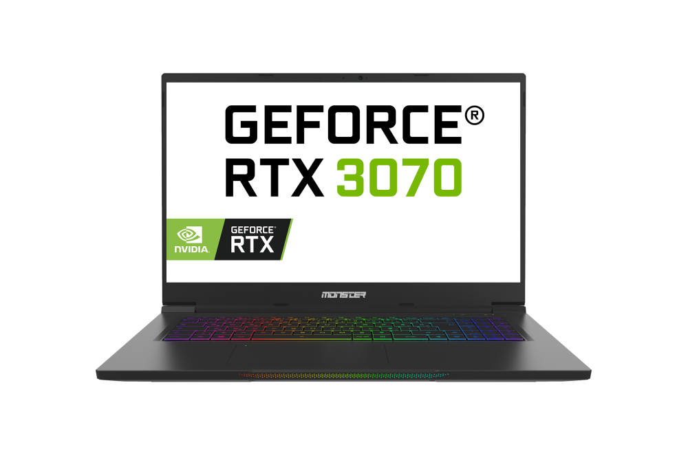
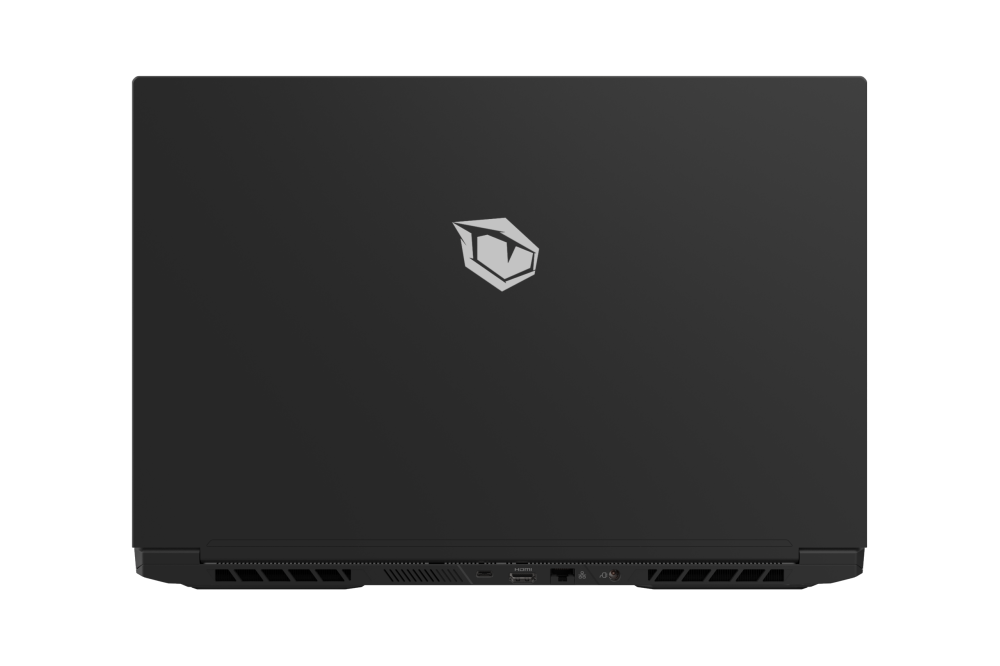
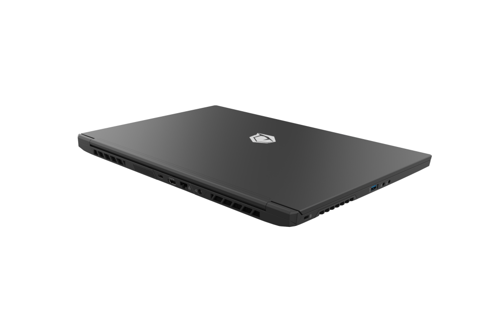
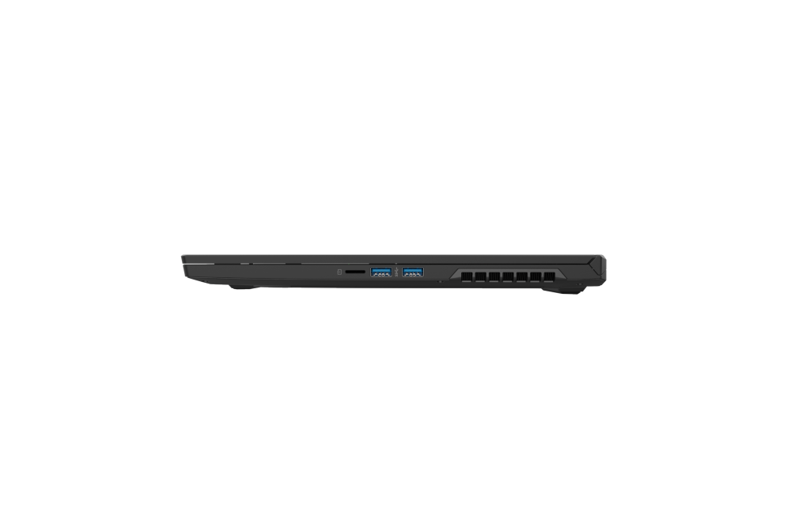
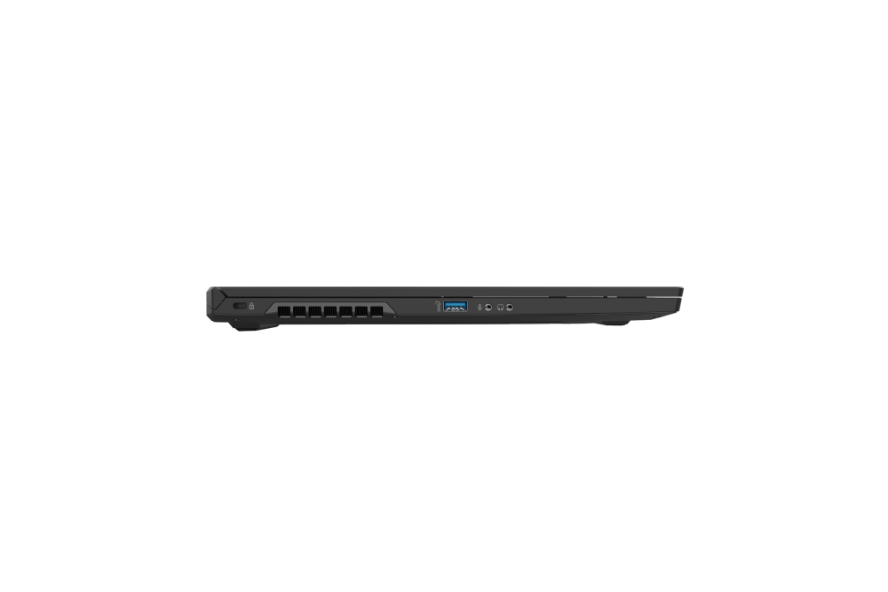
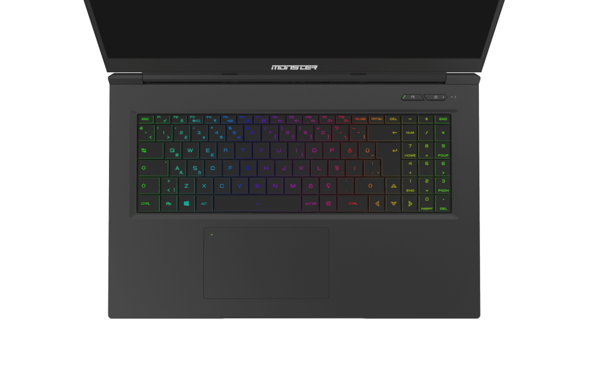
Tanıdıklara 40.000 yabancılara 30.000
Sepete Ekle
Geri Dön
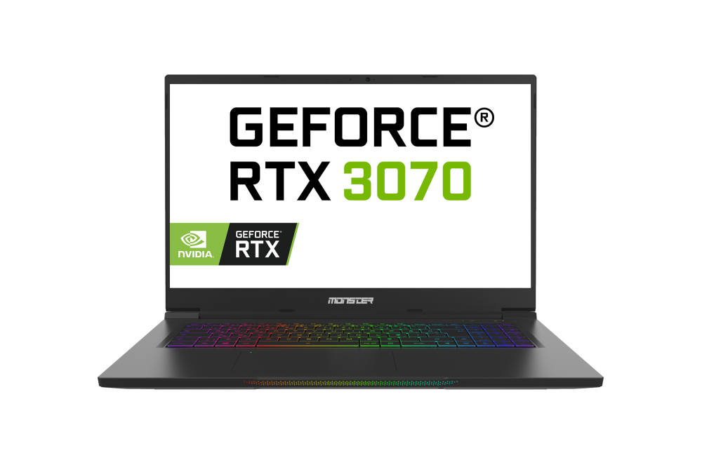
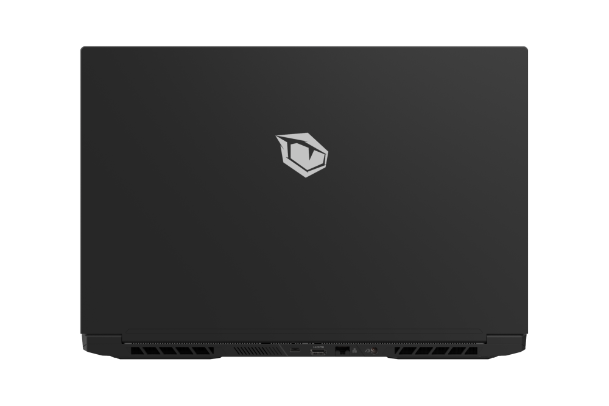
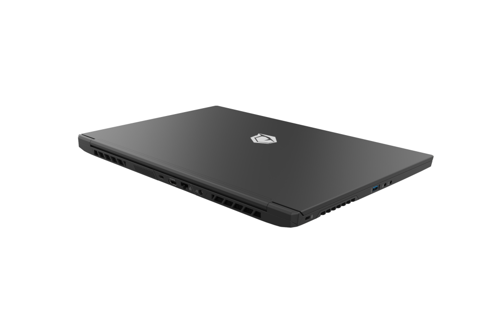
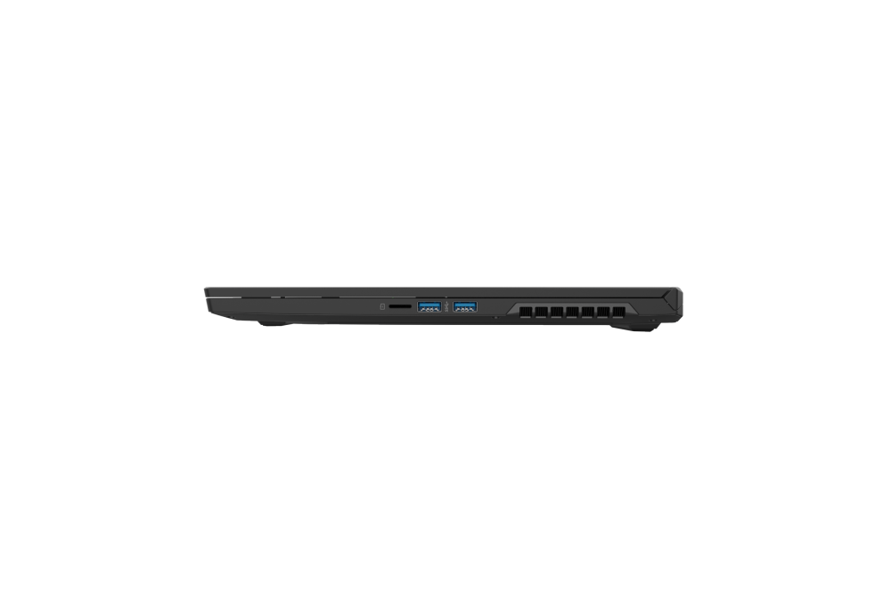
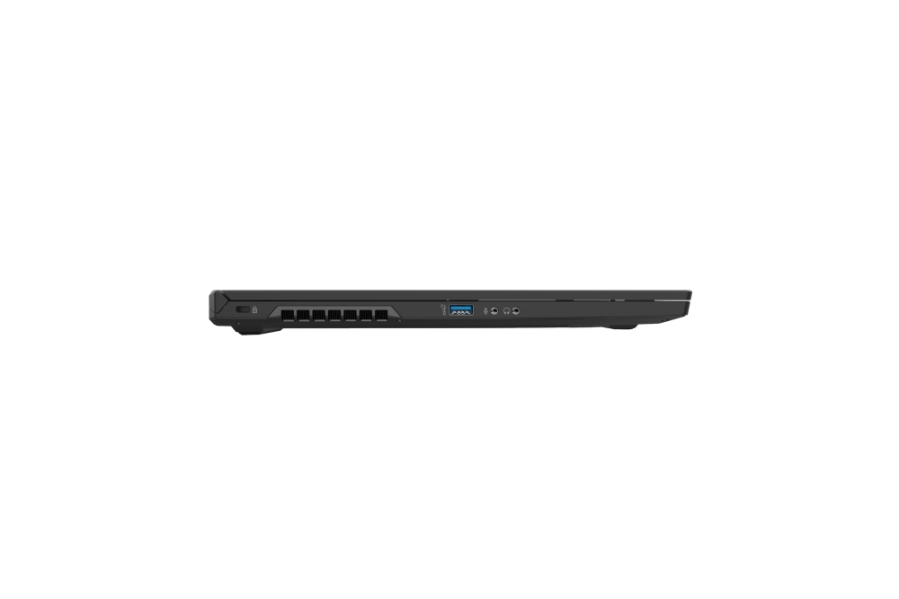
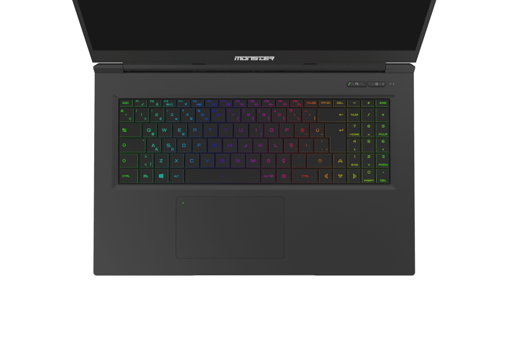
Tanıdıklara 40.000 yabancılara 30.000
Sepete Ekle
Geri Dön